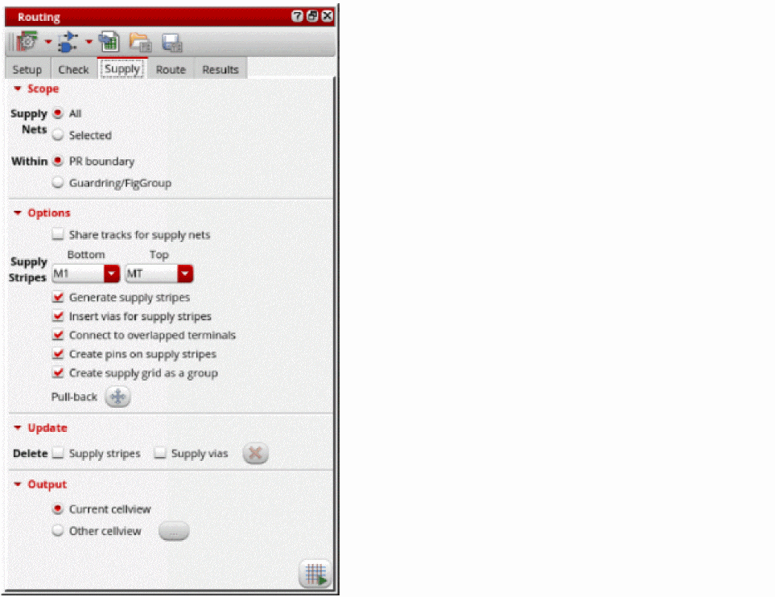
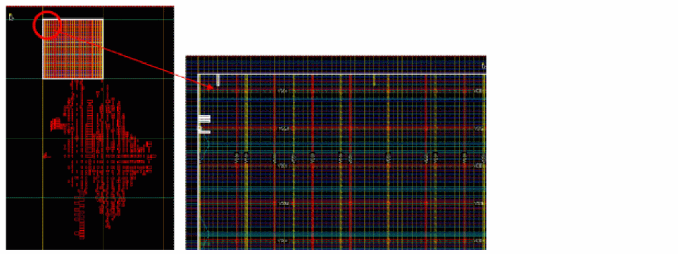

Generating a Supply Grid
In certain standard cell libraries, boundary cells have blockages. In such case, the flow should be modified not to use rails in the row region and to place boundary cells before routing. Generally, a supply grid should be created before the standard cell placement so that placement can prevent routing from interfering with access to standard cell pins.
To generate power rails of VDD and GND nets:
- Open a design in Layout MXL.
-
Choose Window – Assistants – Routing.
Alternatively, right-click anywhere on the layout window menu bar and choose Assistants – Routing. -
In the Routing assistant, click the Supply tab.
 - Click All to define the scope of supply nets to route. You can also select to route Selected nets.
- Click Guardring/FigGroup to route everything within a guard ring or figGroup.
-
Select the bottom and top layers for supply stripes from the Supply Stripes Bottom and Top drop-down list. It generates stripes only on tracks with power and ground wire types that are assigned to nets that have their
sigTypesset to supply and ground.
Automatic generation of WSPs is the simplest method to specify the wire types for the tracks. See Assigning Wire Types to Nets to find out how nets withsigTypesare assigned to wire types. - Select Generate supply stripes.
- Select Insert vias for supply stripes.
-
Click Run power route
 at the lower-right corner of the Supply tab.
at the lower-right corner of the Supply tab.
You can see power stripes and vias generated inside the PR boundary.

Related Topics
Configuring Standard Cell Router Settings
Generating Width Spacing Patterns for Standard Cell Routing
Checking Layout Routability after Running Standard Cell Placer
Running Signal Routing for Standard Cells
Viewing and Analyzing Standard Cell Routing Results
Routing Assistant User Interface for Standard Cell
Return to top